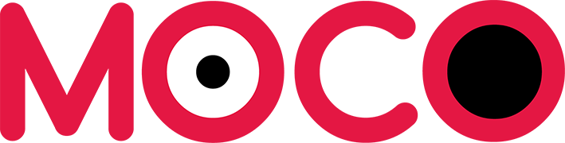
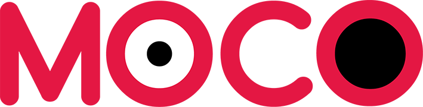
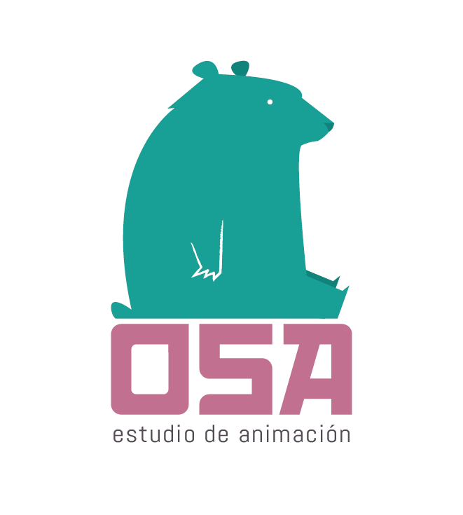
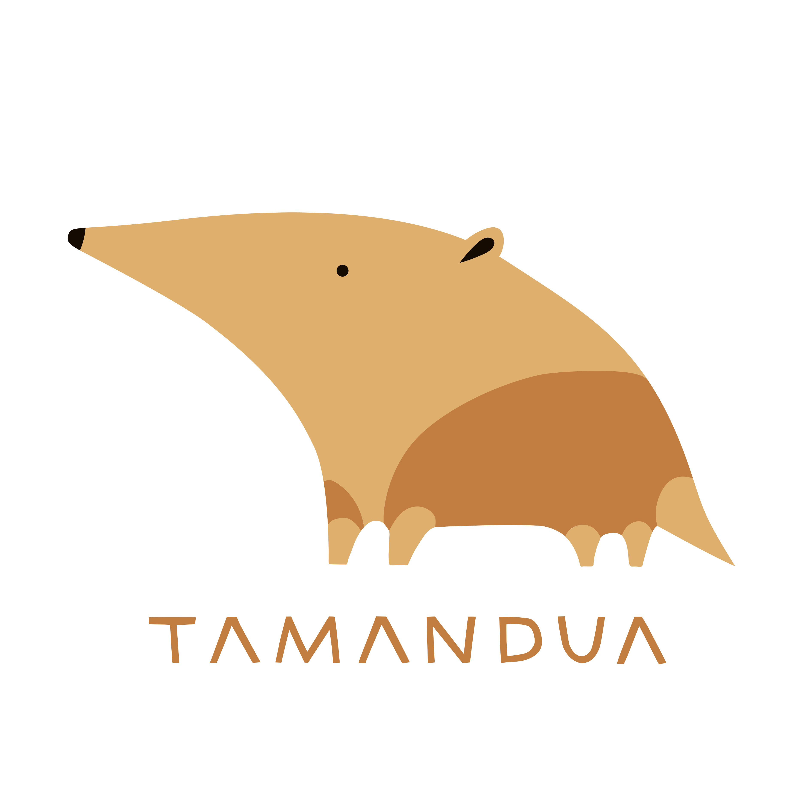
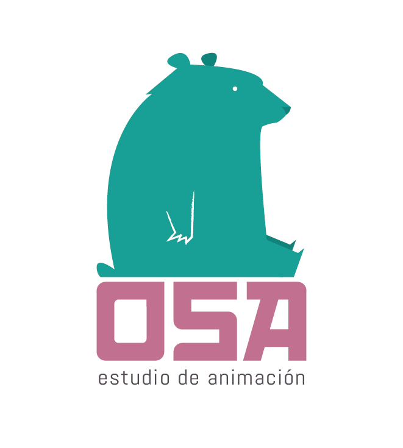
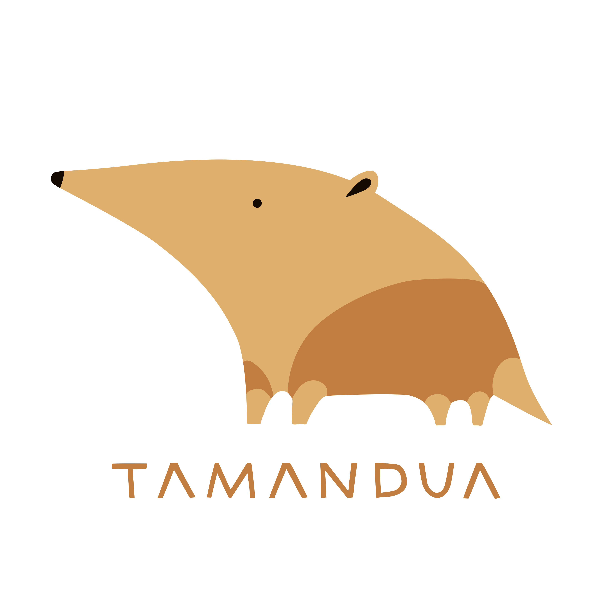

Romina Savary
Producción, desarrollo y gestión de proyectos.

Óperas para soñar
Animación y ópera, música interpretada por Orquesta Sinfónica y Cantantes Líricos. La imaginación nos acerca al universo mágico de la Ópera. Cada capítulo gira en torno a una ópera clásica diferente...

Carlos Montaña
Carlos Montaña, es un obrero en el Tucumán argentino de 1976. En plena jornada laboral llegan las fuerzas represivas al ingenio donde trabaja. Carlos alcanza a percibirlo justo a tiempo para escapar...
Yo no es otro
En el mejor momento de su carrera, un pintor decide recluirse en la montaña y desarrollar su obra por fuera del circuito tradicional del arte. Su casa se convierte en un último refugio, una extensión de su obra y la nave que lo traslada...
Acerca de mí
Soy Técnica Productora en Medios Audiovisuales, egresada del departamento de Cine y TV de la Universidad Nacional de Córdoba. Me desempeño como productora general con experiencia en el desarrollo y producción de contenidos audiovisuales especialmente documental y animación. Soy presidenta de APA, Asociación de Productores de Animación, miembro Fundadora de RAMA (Red Argentina de Mujeres y Diversidades de la Animación) y formo parte del equipo de coordinación de APA LAB, Laboratorio Latinoamericano para el desarrollo de proyectos de animación.
Estudios en colaboración

 

 


